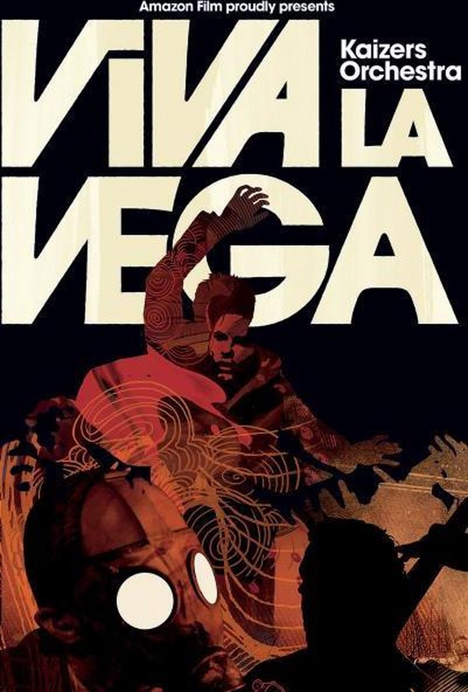
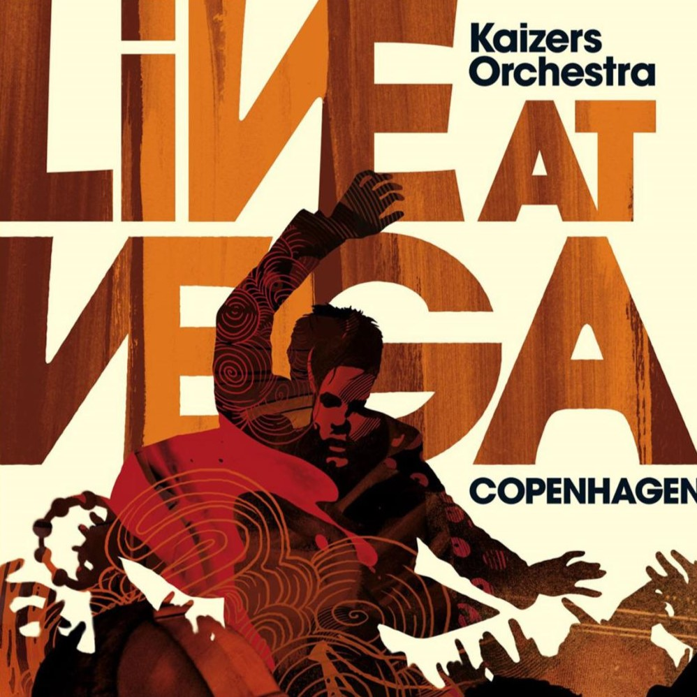

Live At Vega
|  |  |
|
|
|
Live at Vega er et konsertalbum som ble gitt ut 6. mars 2006. Opptakene er fra en konsert de hadde i Vega i København 6. oktober 2005. Konserten ble også filmet og ble gitt ut på en DVD kalt Viva la Vega. I senere tid har den også blitt lagt ut på Kaizers Orchestras sin Youtube-kanal. Se konserten under.